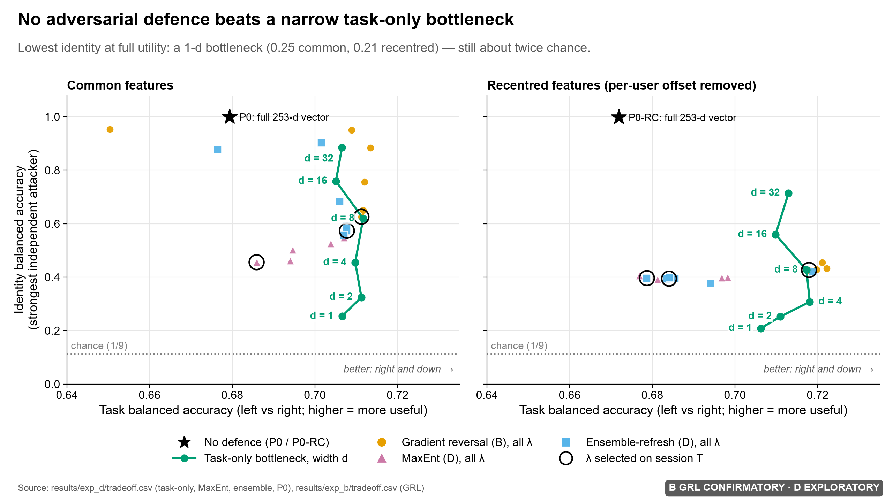
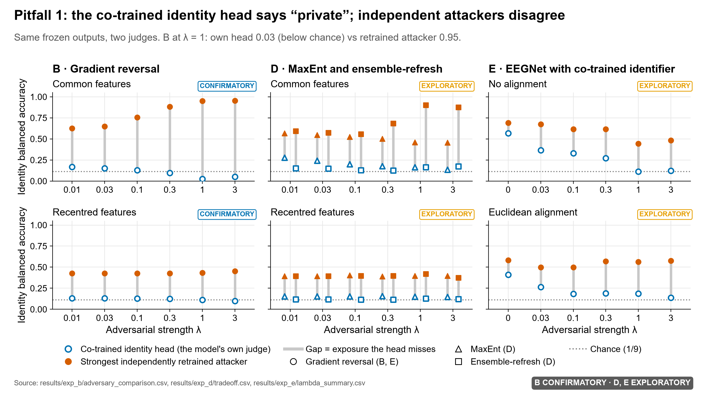
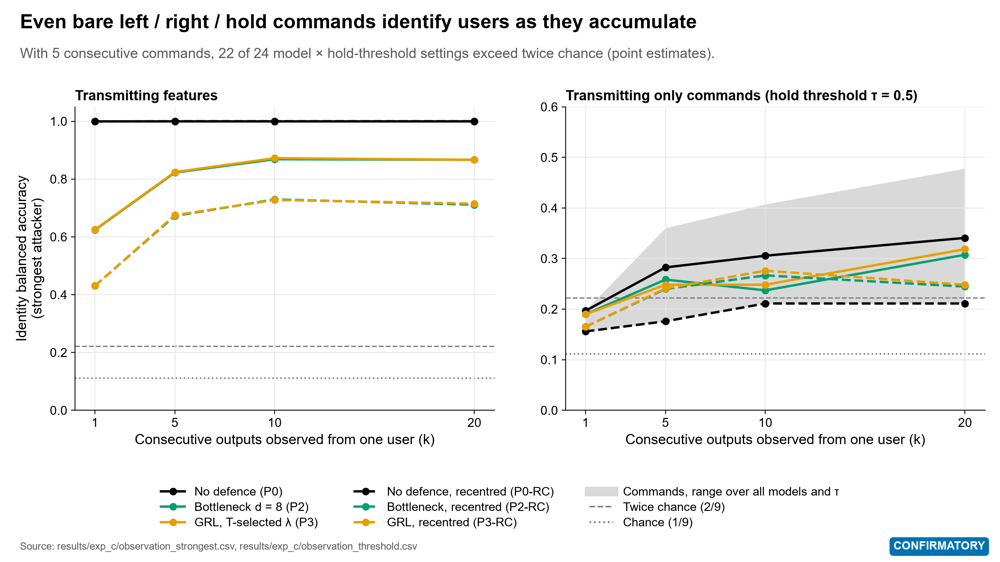
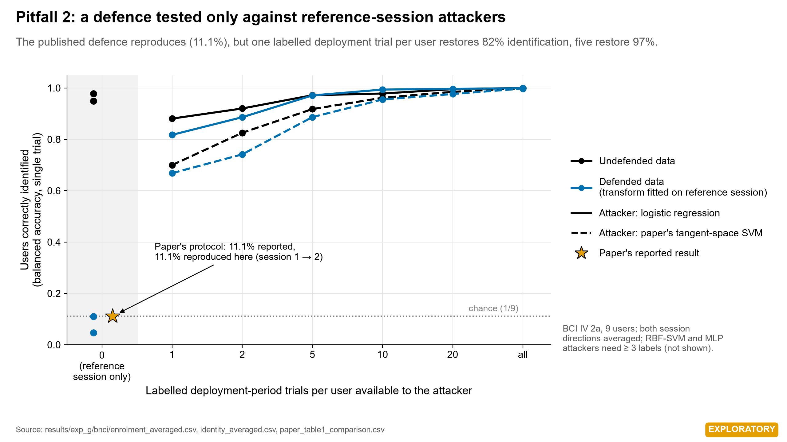
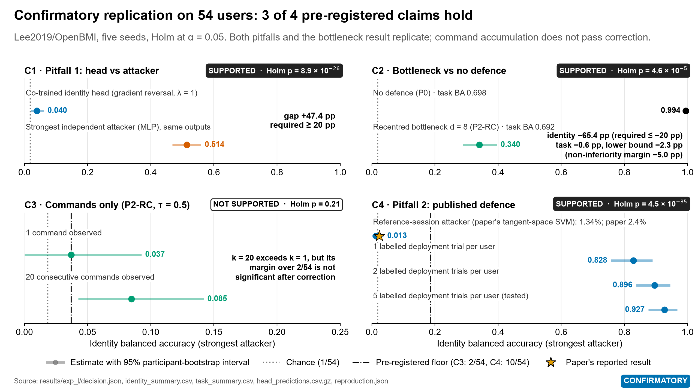

BEAT 프로젝트 결과 발표
BCI가 밖으로 보내는 신호는 사용자가 누구인지 드러낸다
운동상상 EEG 전송물의 신원 노출 감사, 그리고 보호 효과를 과대평가하는 두 가지 평가 함정
BEAT 팀 · 이동현 · 장규범
2026년 11월 16일
문제
BCI는 해독 결과를 기기 밖으로 보내고, 공격자는 그 전송물만 본다
→
→
→
↑
공격자: 전송물만 엿보고
"이 사람이 누구인가"를 맞힌다
얼마나 새는가
특징 벡터와 명령에서 사용자 신원이 얼마나 드러나는가
줄일 수 있는가
왼손·오른손 해독 성능을 지키면서 노출을 낮출 수 있는가
제대로 재고 있는가
보호 효과를 재는 평가 방식이 실제 위험을 반영하는가
2
방법
평가 데이터를 열기 전에 분석을 봉인하고, 공격자는 따로 학습시켰다
공개 데이터 두 종
BCI IV 2a: 9명, 22채널, 서로 다른 날 기록한 두 세션
Lee2019/OpenBMI: 54명, 20채널, 두 세션. 확증 재현에만 사용
독립 공격자 3종
로지스틱 회귀, RBF SVM, MLP
방어 모델을 고정한 뒤 그 출력만으로 처음부터 학습한다. 방어와 함께 학습된 식별기의 점수는 증거로 쓰지 않는다
사전등록과 봉인 3회
계획, 코드, 학습 데이터만으로 한 선택을 커밋한 뒤에 평가 데이터를 연다
판정 규칙을 미리 정하고, 실패한 가설과 편차도 결정 로그에 공개한다
지표: 신원 balanced accuracy. 공격자가 사용자를 맞힌 비율이며, 우연 수준은 1/사용자 수 (9명이면 0.111, 54명이면 0.019)
3
결과 · 특징 누출
가공하지 않은 특징 벡터는 사실상 모든 사용자를 식별한다
BCI IV 2a · 9명
1.00
우연 수준 0.111 · 사용자별 재중심화 뒤에도 0.998
Lee2019 · 54명
0.994
우연 수준 0.019 · 봉인된 확증 실험의 기준 조건
전송물: 253차원 리만 접공간 특징 벡터 · 값은 독립 공격자 3종 중 가장 강한 공격자의 신원 balanced accuracy
4
결과 · 방어 비교
좁은 과제 병목이 노출을 가장 많이 줄였지만, 우연 수준까지는 아니다

병목 너비 d = 1, BCI IV 2a 9명
식별 0.25
과제 정확도 0.71 유지
병목 너비 d = 1, Lee2019 54명
식별 0.057
과제 정확도 0.70 · 우연의 약 3배
적대적 학습 3종
gradient reversal, MaxEnt, ensemble refresh 모두 이 단순한 기준선을 넘지 못했다 (탐색적)
5
함정 1
방어와 함께 학습된 식별기는 "안전하다"고 말하지만, 독립 공격자는 다시 맞힌다

gradient reversal, λ = 1, 9명
0.026 대 0.951
함께 학습한 식별기 대 독립 공격자
EEGNet, 9명 (탐색적)
0.11–0.19 대 0.44–0.58
54명 확증 C1
0.040 대 0.514
Holm p = 8.9×10⁻²⁶
6
결과 · 명령 누출
왼쪽·오른쪽·정지 명령만 보내도, 관찰이 쌓이면 신원이 드러난다

명령 5개 이내, 9명
24개 중 22개
모델·임계값 설정이 우연의 2배에 도달 (점추정)
명령 20개, 9명
식별 0.21–0.48
우연 수준 0.111
54명 확증 C3
지지 안 됨
명령 20개에서 0.085였지만
보정 뒤 Holm p = 0.21
7
함정 2
기준 세션 공격자만으로 시험한 방어는, 배포 기간 라벨 몇 개로 뚫린다

공개 방어 재현 (arXiv 2610.15626)
90.8% → 11.1%
논문 조건 그대로, 9명
배포 기간 라벨, 사용자당
1개 81.75%
5개 97.11%
54명 확증 C4
1.34% → 92.7%
논문 조건 재현 뒤 라벨 5개
Holm p = 4.5×10⁻³⁵
논문이 틀렸다는 뜻이 아니라, 공격자가 배포 기간 라벨을 가질 수 있다는 다른 위협 모델에서는 보호가 유지되지 않는다는 뜻이다
8
확증 재현 · Lee2019 54명
54명 확증 재현에서 사전등록한 주장 4개 중 3개가 지지됐다

9
연구 무결성
지지되지 않은 가설과 실행 중 문제도 그대로 보고했다
| 사전등록 가설 | 결과 | 판정 |
|---|
| H1 접공간 해독기가 CSP보다 낫다, 보정 1 run | 0.689 대 0.669, p = 0.10 | 지지 안 됨 |
| H2 적대 학습이 재중심화보다 노출을 더 줄인다 | 선택된 λ = 0.01, 차이 없음 | 지지 안 됨 |
| C3 54명에서 명령 관찰이 길수록 노출이 커진다 | 명령 20개 0.085, Holm p = 0.21 | 지지 안 됨 |
무결성 장치
봉인 커밋 3개
6ab5668, b216b7d, 9757c3f
테스트 109개와 CI
평가 데이터 누출 차단 테스트 포함
봉인 해시 검증
봉인과 다르면 세션 2 파일을 열지 않는다
실패 기록 보존
메모리 부족으로 멈춘 실행도 남기고 같은 분석을 재실행
10
제안 · 감사 체크리스트
신원 보호를 주장하려면 적어도 다섯 가지를 확인해야 한다
1
독립 공격자로 다시 공격한다
방어와 함께 학습된 식별기의 점수는 증거가 아니다
2
배포 기간 라벨을 가진 공격자를 시험한다
라벨 수에 따른 재식별 곡선을 함께 보고한다
3
단순한 기준선과 비교한다
과제 병목과 사용자별 재중심화를 먼저 이겨야 한다
4
관찰 길이를 늘려 본다
메시지 하나 기준의 수치는 노출을 과소평가한다
5
우연 수준, 사용자 수, 시나리오를 함께 밝힌다
공격자의 실패를 익명화로 표현하지 않는다
11
한계
결과는 공개 데이터의 재생 실험과 이 공격자들에 한정된다
닫힌 집합 식별
9명과 54명 안에서 누구인지 고르는 문제이며, 처음 보는 사람을 판별하는 열린 집합 인증은 아니다
재생 실험
로봇팔은 기록된 뇌파를 재생해 움직였고, 사람이 피드백을 받는 폐루프 제어는 하지 않았다
공격자 범위
공격자 3종 기준의 값이며, 더 강한 공격자는 더 많이 식별할 수 있다. 낮은 값은 하한일 뿐이다
탐색적 결과 구분
적대 학습 비교, EEGNet, 공개 방어 재현은 이미 본 데이터를 다시 쓴 탐색적 결과다
형식적 보장 없음
어떤 방어도 차등 프라이버시 같은 수학적 보장을 제공하지 않는다
12
정리
BCI 프라이버시는 결과뿐 아니라 평가 방식까지 함께 보고해야 한다
1
전송물은 신원을 드러낸다. 원시 특징은 54명 중 0.994를 식별했다
2
가장 단순한 과제 병목이 가장 잘 막았지만, 우연 수준까지 내리지는 못했다
3
함께 학습한 식별기와 기준 세션 공격자는 보호를 과대평가한다. 두 함정 모두 54명에서 확증됐다
GitHub 저장소 · CI
기술보고서
인터랙티브 웹 데모
한국어 해설서
감사합니다. 질문을 받겠습니다